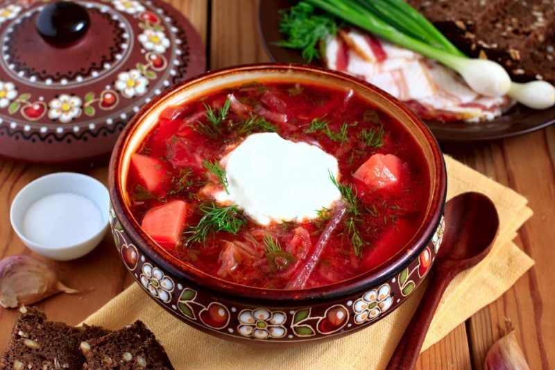

Borshch

Description
Borscht is a sour soup that is traditionally made with meat stock and boiled vegetables.
The Ukrainian version, which features beets, is perhaps the most well known type — but varieties of borscht can be found throughout Central and Eastern Europe and Northern Asia.
This borscht recipe is delicious, nutritious, and full of flavor.
Plus, its gorgeous red hue is absolutely stunning!
Ingridients
- Sausage:This Ukrainian borscht recipe starts with a pound of pork sausage.
- VegetablesYou’ll need beets, carrots, baking potatoes, cabbage, and an onion.
- Canned tomatoes: Use drained diced tomatoes and canned tomato paste.
- Vegetable oil: Cook the onion in oil.
- Water: You’ll need almost nine cups of water for this big-batch soup.
- Garlic: Three cloves of garlic add bold flavor.
- Sugar: A teaspoon of white sugar lends subtle sweetness.
- Seasonings: Season the borscht with salt and pepper to taste.
- Sour cream: Top the borscht with sour cream.
- Fresh herbs Garnish the soup with fresh parsley or dill.
Steps
- Crumble sausage into a skillet set over medium-high heat. Cook and stir until no longer pink. Remove from the heat and set aside.
- Fill a large pot halfway with water (about 8 cups) and bring to a boil.
- Add sausage to pot, cover pot, and return to a boil. Add beets and simmer for 10 minutes. Add carrots and potatoes and continue to cook until potatoes are tender, about 10 minutes more. Stir in cabbage and tomatoes.
- Heat oil in a skillet over medium heat. Add onion and cook until tender. Stir in tomato paste and remaining 3/4 cup water until well blended; transfer to the pot.
- Add garlic to the soup, cover, and turn off the heat. Let stand 5 minutes. Stir in sugar and season with salt and pepper.
- Ladle into serving bowls. Garnish with sour cream and dill.